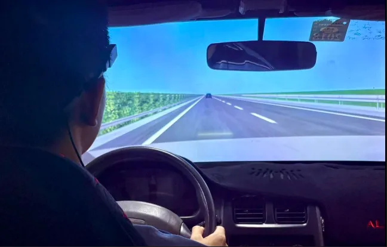
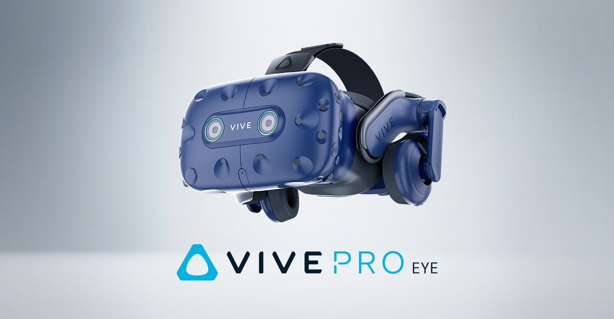
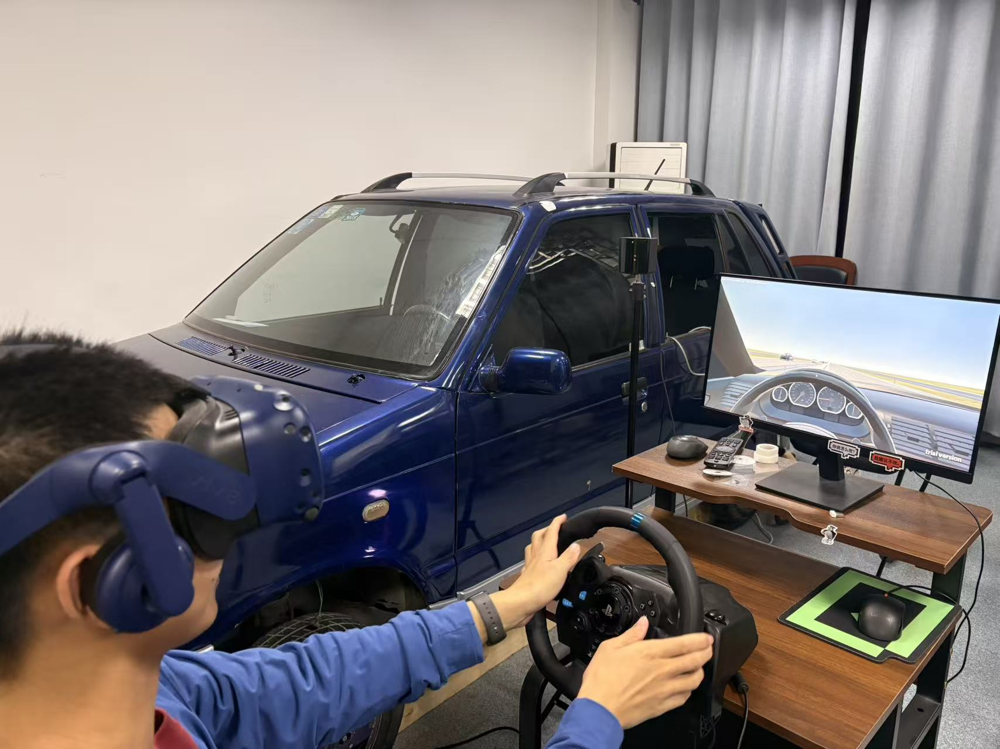
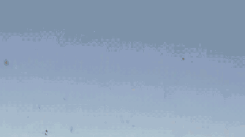

01
人因实验设计与场景开发
基于 PDT、驾驶警觉性（Driving Vigilance）等人因实验范式，使用 Unity 从 0 开发驾驶场景、任务逻辑与实验流程。
联调实体模拟器与 HTC VIVE Pro Eye，实现多模态同步采集；VR 环境中可通过头显记录眼动数据。
完成渲染优化，支持 90 分钟以上的实验任务。
实体驾驶模拟仿真环境

实体操控与外部屏幕呈现驾驶场景。
佩戴 VR 头显的驾驶模拟仿真环境

图片来源：HTC 官网


比较不同告警时机下的驾驶员反应时间，评估 AR-HUD 告警效果。